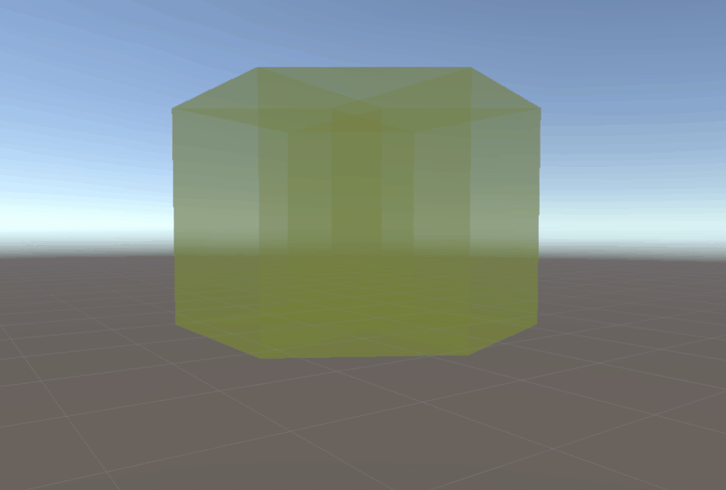

I made some simple interactions and setup a scene, for demonstration.
Please check out - slides - for more details
I made some simple interactions and setup a scene, for demonstration.
Please check out - slides - for more details
Here I implemented the frame representing the verteces & edges in sliced projection. I found it super helpful in understanding 4D object by providing both "whole mesh" (orthogonal projection) and "partial slice" (sliced projection).
The realization of a "slice" requires a lot of calculations. A vertex in a slice corresponds to an edge in 4D, which calculated by the intersection of current 3D "plain" with the 4D line segment. So on, an edge in a slice comes from a polygon in 4D.
This requires the saving format of a 4D object to be complicated, as far as I could figure out. I need to save all 4 levels of dimentional data in order to compute 3D slicing efficiently. Here I use indexing for higher dimentional data.
Throwing away the frustration from complicated projection situation, I simply start working on mesh visualization with orthogonal projection. I used double sided shader with semi-transparent material.

This 4D cube has a strict 4D model structure. This structure is represented in Vertices method, together with Edges and Faces indexing to vertices. Using this way, any 4D object can be manually "modeled" (but somehow fuzzy).
After some mathematical thinking, I realized that the previous projection method is not what I want. The reason why the cube is moving along the camera, is because when the camera is moving, the projection "plane (3D)" is also moving with the camera, And the projected cube, when transformed back to 4D space, is located at the the projection "plane".
In addition, here I introduce "2 eye problem":
In method 1, a 4D object is projected onto 3D scene which is shared by the 2 eyes. But it becomes tricky to find the viewpoint in 4D because neither eye is appropriate.
In method 2, the 4D projection is divided by 2 eyes. But it will cause the 3D scene different for each eye, and the result... I can't predict that feeling.
Using the theory established previously, I try to implement the projection firstly from 4D objects to a 3D scene, then render them in VR.
Specifically, I use the perspective projection from 4D to 3D. The equation is shown here:
Vector4 local = transform4D.WorldToLocalPosition(worldPos);
Vector4 projected = new Vector4(local.x / local.w, local.y / local.w, local.z / local.w, local.w);
return transform4D.LocalToWorldPosition(projected);
The implementation of projection brings me some practical issues:
This is a big topic! I found this material very helpful in understanding 4D projection. Here is my study so far.
First of all, the projection between dimensionality can be done layer-by-layer, mathematically. That means, we can project 4D to 3D first, then 3D to 2D. Different ways of projection can be applied to both, including orthogonal, perspective and sliced projection. The projection table shows their relations:
Here are explanations of each projection method in 3D to 2D:
Orthogonal: flatten every vertex onto the projection plane, vertically
Perspective: drag every vertex towards the viewpoint to the projection plane, like a pinhole camera
Sliced: cut the object with the projection plane, and show only the intersected geometry.
All the methods apply to 4D projection as well.
Here I summarize some math used in 4D space.
Foundamentally, a 4D position is in 4 DoF(Degree of Freedom, same as below), and a rotation has 6 DoF. An effective explanation would be: In 3D, a rotation has 3 DoF aligning with each axis, which could also be considered as every 2 axis (x, y, z)->(yz, zx, xy). Same can be found in 2D: 1 axis (xy) and in 1D: no rotation. So, a 4D transform consists of a 4 DoF position (x, y, z, w) and a 6 DoF rotation (yz, zx, xy, xw, yw, zw).
Similar to 3D rotation, a rotation matrix in 4D should be 4x4. Here I simply multiply all matrices for all axis in a certain order. This should be replaced by Rotor4D later, which can be considered as the equivalence of Quaternion in 3D.
There are also things that not quite the same with 3D, such like cross product. There are no cross product between two vectors in 4D, because we cannot find one single direction that is perpendicular to the given 2 vectors. That is because the number of co-perpendicular axis is now 4, so we need 3 vectors to calculate their cross product. We can also use matrix determinant to conduct the 4D cross product:

After studying the paper and demo, I started working in Unity. By simply implementing rotation functions and orthogonal projection, I got the result:

This hypercube is drawn with Debug.DrawLine() and automatic rotation is added. I am still thinking what is the best way to visualize 4D object.
Miegakure: - Intro to 4D gameplay - , - Technology behind -
4D Toy: - Demo video - , - Website -
Paper: - 4D visualization -
And this is my new - GitHub repository - !